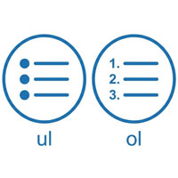

番号なし箇条書き

- プロンプト例
HTMLの箇条書きについて解説して
🔹 HTMLの箇条書き（リスト）の基本
1️⃣ 順序なしリスト（ul）
黒丸（・）などで表示される箇条書き
<ul> <li>りんご</li> <li>みかん</li> <li>バナナ</li> </ul>
👉 表示結果：
- りんご
- みかん
- バナナ
タグの意味
- <ul>：unordered list（順序なしリスト）
- <li>：list item（項目）
2️⃣ 順序付きリスト（ol）
番号付きの箇条書き
<ol> <li>起きる</li> <li>顔を洗う</li> <li>学校へ行く</li> </ol>
👉 表示結果：
- 起きる
- 顔を洗う
- 学校へ行く
タグの意味
- <ol>：ordered list（順序付きリスト）
🔹 箇条書きの入れ子（ネスト）
<ul> <li>果物 <ul> <li>りんご</li> <li>みかん</li> </ul> </li> <li>野菜</li> </ul>
👉 表示結果：
- 果物
- りんご
- みかん
- 野菜
🔹 CSSで見た目を変える
● 黒丸を消す
ul { list-style: none; }
● 数字をローマ数字にする
ol { list-style-type: upper-roman; }
主な値：
- disc（デフォルトの黒丸）
- circle（白丸）
- square（四角）
- none（なし）
🔹 よくある間違い
- ❌ <ul> の中に直接文字を書く
- ⭕ 必ず <li> の中に書く
<!-- ダメ --> <ul> りんご </ul> <!-- 正しい --> <ul> <li>りんご</li> </ul>
まとめ
- 番号なし箇条書きは <ul> + <li>
- 見た目は CSSで調整するのが基本
- デザイン次第でマークも完全に自由